# Jupyter Notebook¶
本节中，介绍Jupyter Notebook的各种基本操作与使用。
开始Jupyter Notebook¶
Jupyter的安装，具体情况因环境而异，不作详细说明。诸如pip安装，Anaconda安装等各种方法。
云环境上还有一些免费的服务运行Jupyter Notebook。
Jupyter Notebook基本使用¶
コマンドプロンプトから次のように入力すると、サーバが起動しブラウザが起動して、Jupyter Notebookが表示されます。
在命令行输入以下内容时，启动服务器。
$ jupyter notebook
默认情况下，使用本地主机端口8888，以通过指定 –port选项来指定其它端口。
$ jupyter notebook --port 9000
启动后，浏览器会出现一下类似画面。画面会列出当前目录中的文件。
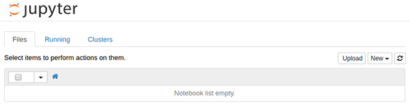
输入并运行代码¶
输入代码。
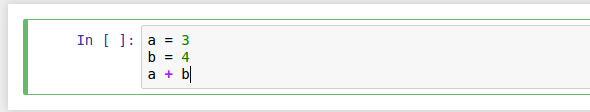 代码（执行之前） 按Shift +Enter键，执行代码（评估单元格）。
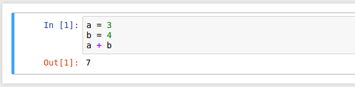 代码（执行后） 将显示单元格中最后一行的评估结果。
执行后，将创建一个新的单元格。可以在其中输入新代码，按 Shift + Enter 来连续运行它们。 可以通过单击已执行的单元格来编辑内容，然后重试。
此外，使用Ctrl + Enter 键也可以执行单元格，但不会创建新的单元格。
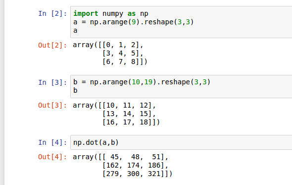 多单元格 在一个Notebook中，单元格被视为一系列sessoin，读入的数据和变量一直有效。导入后，无需重新导入其他单元中。单元格最后一行的评级值显示在该单元格下方。也就是说， 输入变量名，则将显示该变量的值。
停止Jupyter Notebook¶
要停止Jupyter Notebook，在运行Jupyter Notebook的控制台屏幕console上按 Ctrl + C 键，显示信息后。按y键。
停止执行代码
在执行繁重的处理途中，可以中途停止。 在“Kernel”菜单中选择“Interupt”来停止。 “Kernel”菜单中还有一个“restat”项，将重新启动服务器。
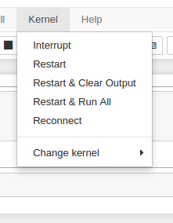 Kernel menu
编辑单元格¶
使用Edit菜单编辑单元格。特别是「Delete Cells」、「Split Cell」、「Merge Cell Above」（上）、「Merge Cell Below」（下）使用起来很方便。
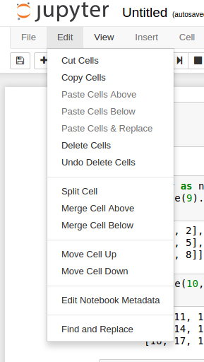
其他魔术命令¶
以“％”开头的命令称为魔术命令。如％timeit。测量代码的执行时间。
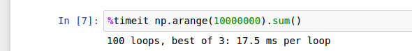 还有其他魔术命令，有关信息，在单元格中键入「%magic」，然后按Shift + Enter，获取详细的文档。
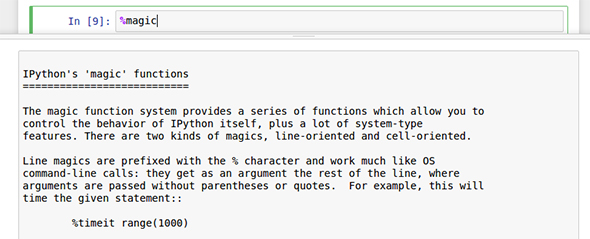
函数，方法，类等的帮助信息¶
要获得有关函数，方法，类等的帮助信息，在函数名称，方法名和类名之后添加？，然后按 Shift + Enter 键。
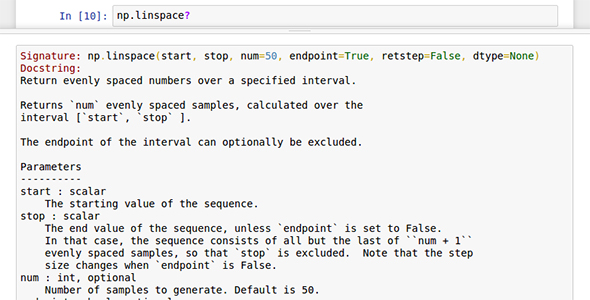 使用??，则显示相应部分的源代码。
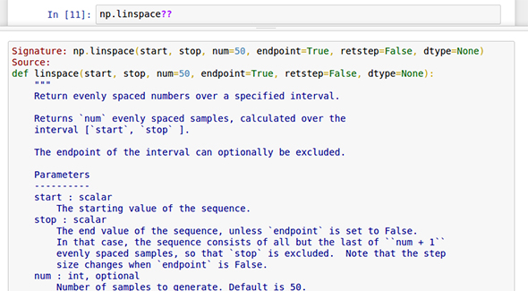
Markdown格式输入文本¶
除了代码，还可以以Markdown格式输入文本。需要在文稿和执行代码混在的演示文稿时，很方便。从右上方的下拉菜单中选择Markdown菜单，写Markdown文本。
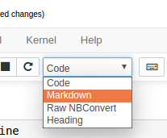
创建Markdown文档
，以Markdown格式输入文本，然后按 Shift + Enter键设置文本格式。
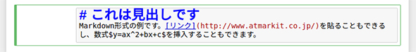 Markdown文本示例（格式化之前）
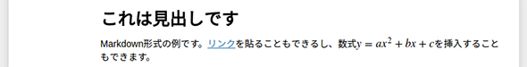 Markdown文本示例（格式化后）
可以将以这种方式创建的页面导出为HTML形式。使用起来很方便。
[ ]: